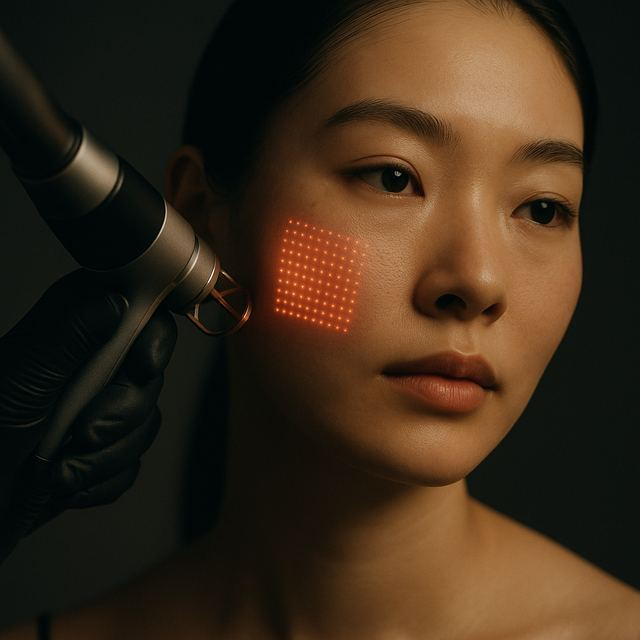

CO2 Fractional Laser in Seoul: what it is, how it feels and what it costs
Resurfacing for acne scars and rough texture.
 Romie · Glow Up Seoul · Updated 17 Oct 2026 · 3 min read
Romie · Glow Up Seoul · Updated 17 Oct 2026 · 3 min read
Quick answer
Resurfacing for acne scars and rough texture. Downtime is 1 week+, results last 2 years or more, and reference prices in Seoul start from ₩200,000 (per session).
- Downtime1 week+
- Lasts2+ years
- FeelsStrong
- From₩200,000per session · ≈ $140
What it is
CO2 fractional laser resurfaces the skin to smooth acne scars and rough texture — the most powerful texture treatment we offer.
How it works
Microscopic columns of laser energy trigger deep repair and collagen remodeling, replacing scarred tissue with smoother skin.
| Mechanism | Ablative fractional CO2 |
|---|---|
| Best for | Acne scars, deep texture |
| Sensation | Warm; numbing used |
| Downtime | Redness + light peeling ~1 week |
| Results last | Long-lasting |
Important
This one has real downtime. Plan it for the start of a longer trip, not the day before an event.
Strong results, but respect the recovery — skin needs about a week to settle.
Good for
Rough texture
The fractional CO2 laser ablates microscopic columns of damaged skin, triggering a deep wound-healing response that resurfaces the area. As new skin forms, rough texture, enlarged pores and shallow scarring are visibly smoothed.
Acne
For acne scarring, fractional CO2 reaches the depressed scar tissue and stimulates collagen to fill it from below while resurfacing the top. It remodels pitted, uneven acne scars more powerfully than non-ablative options.
Why people love it
- Smooths acne scars and texture
- Long-lasting resurfacing
Good to know
- Real downtime — plan around your trip
Recovery: Redness and light peeling for about a week.
Questions people ask about CO2 Fractional Laser
What is CO2 Fractional Laser?
Resurfacing for acne scars and rough texture.
How long does CO2 Fractional Laser last?
Results usually last 2 years or more.
Is there downtime after CO2 Fractional Laser?
Redness and light peeling for about a week.
Does CO2 Fractional Laser hurt?
Most people describe it as strong. What it feels like: Warm; numbing used.
How much does CO2 Fractional Laser cost in Seoul?
Reference prices at our partner clinics start from ₩200,000 (per session, ≈ $140). You get a full written quote before anything is booked.
Who is CO2 Fractional Laser good for?
People who want to improve rough texture, acne. Your doctor confirms whether it suits you at the consultation.
Not sure it’s right for you?
Send Romie a photo and your concern. She’ll tell you honestly, even if the answer is “you don’t need this”.
Ask Romie on WhatsAppThis guide is general information, not medical advice. Whether a treatment suits you is decided by your doctor at consultation. Prices are reference prices from partner clinics for planning only.